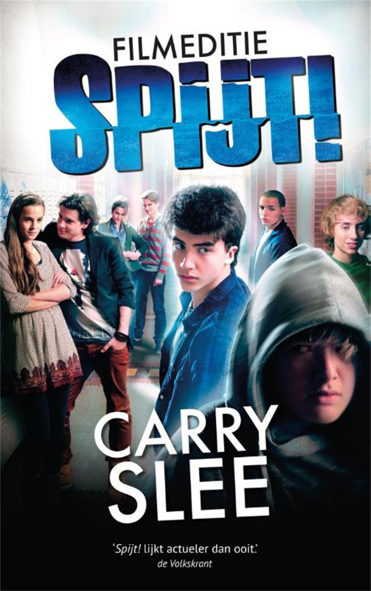

Welkom bij de informatieve website over Jochem van Spijt!
Op deze website kan je navigeren naar informatie punten en kan je jezelf helemaal verblijden met informatie over Jochem. Dit is niet een website met kwade doeleinden.
Over de Jochem
Hier kan je alles vinden over Jochem, wie hij is en wat hem zo bijzonder maakt.
Over de Gallerij
Hier bevindt zich een collectie met exemplaren van de beruchte Jochem.
Over de Wie ben ik?
Altijd al benieuwd geweest naar wie jij het meeste toetrekt in Spijt! doe dan nu de quiz!